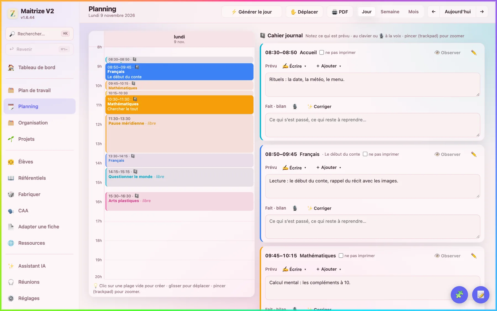
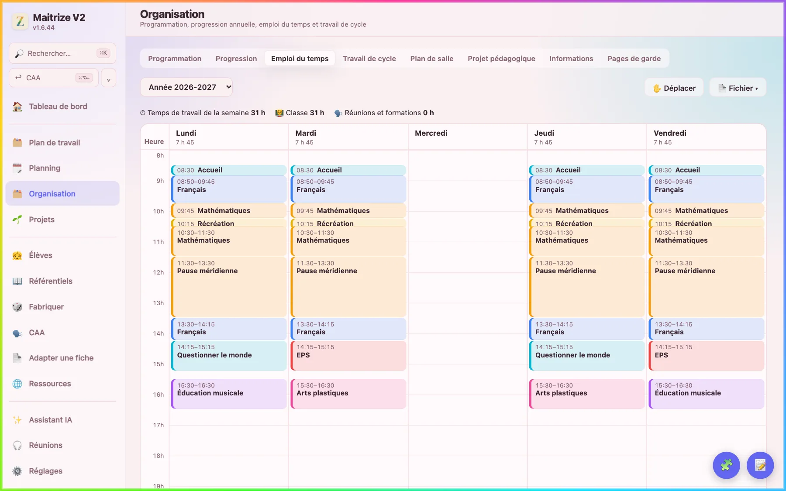
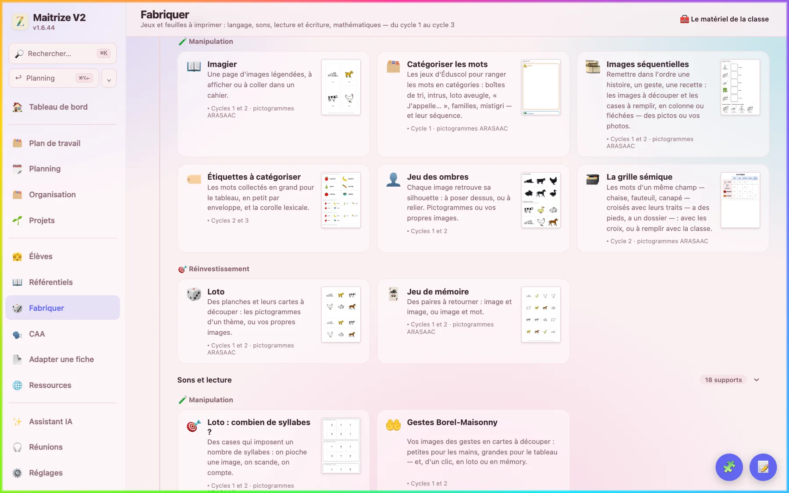
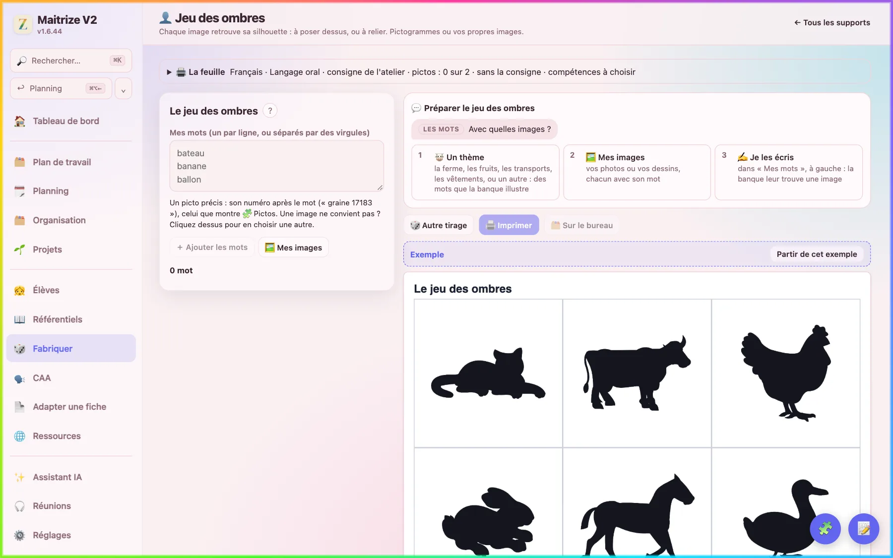
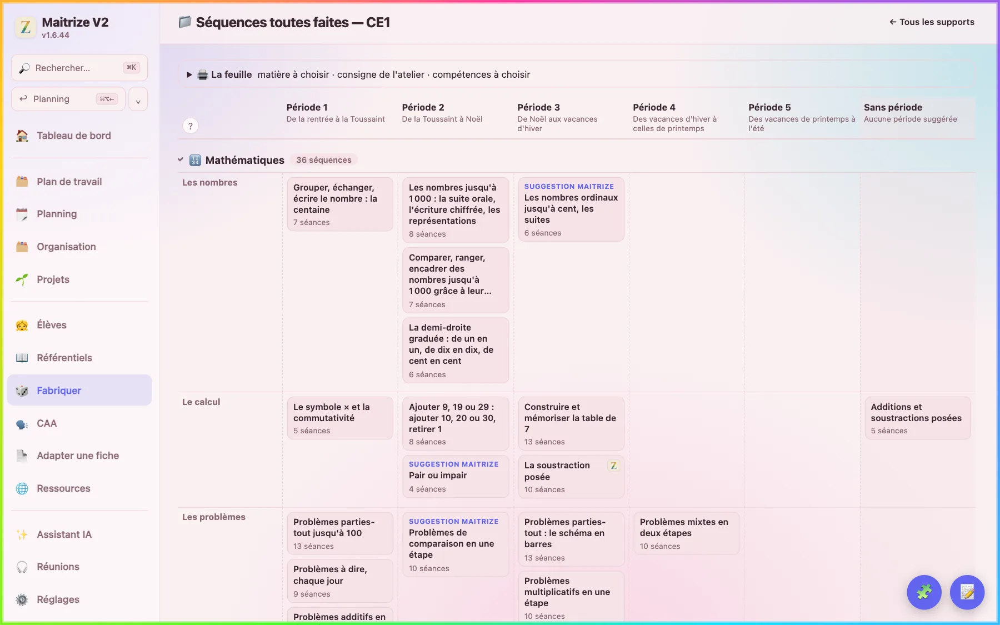
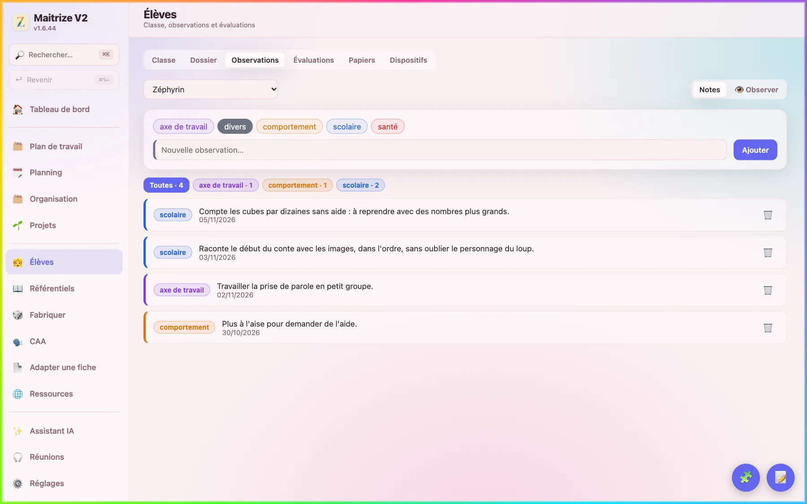
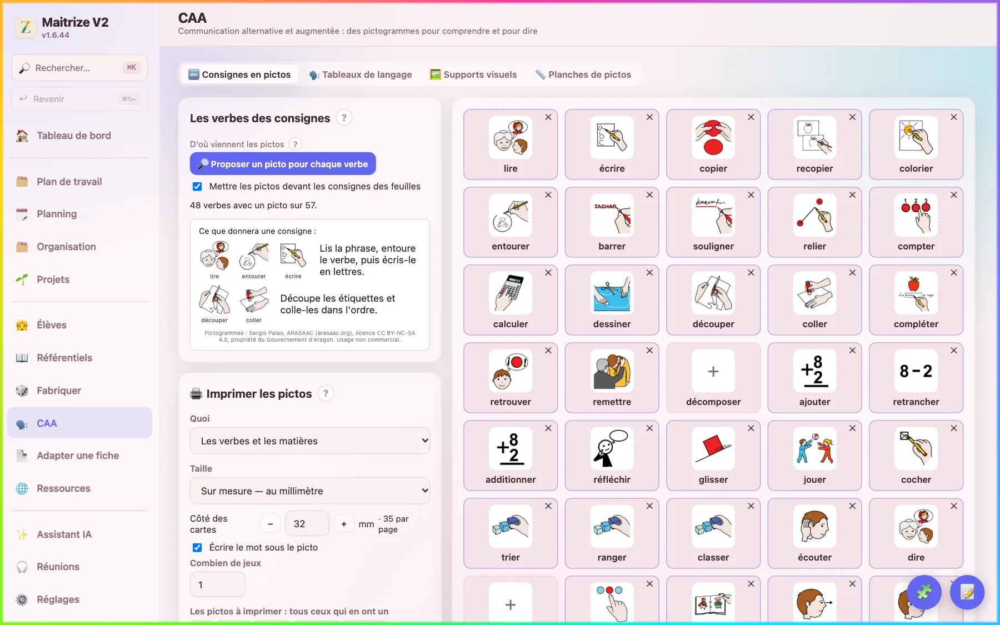
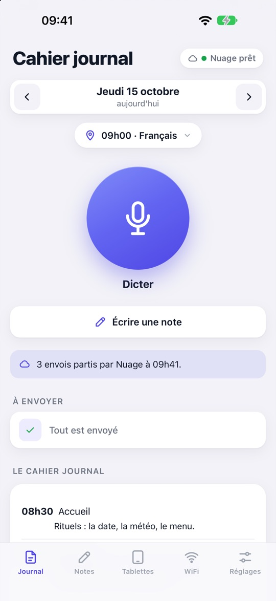
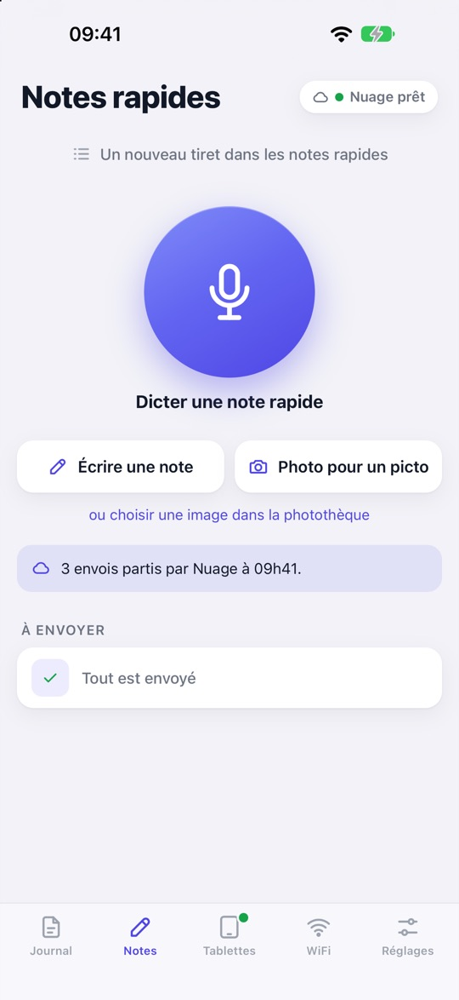

Préparer sa classe, tenir son cahier journal, fabriquer ses feuilles, suivre ses élèves : une seule application, faite par un enseignant pour ses collègues.
Gratuite. Sans compte. Sans publicité. Vos données restent sur votre ordinateur.

Le cahier journal, chaque jour
Le planning reprend votre emploi du temps. Pour chaque créneau, vous écrivez ce qui est prévu, puis ce qui a été fait, au clavier ou à la voix. Tout s'enregistre seul, et la journée s'imprime en PDF.

Des feuilles prêtes à imprimer
Plus de 150 modèles du cycle 1 au cycle 3 : fiches, jeux, lotos, outils pour l'élève, affichages. Chaque carte montre un exemple de la feuille. Vous partez de cet exemple ou de vos propres mots, vous réglez, vous imprimez.

De vrais pictogrammes, ou vos photos
Les feuilles s'illustrent avec trois banques de pictogrammes libres : ARASAAC, Sclera et les consignes de François Bajard. Une fois installées, elles marchent sans connexion. Une image ne vous convient pas ? Un clic, et vous en choisissez une autre.

Des séquences toutes faites
Un dossier par classe, de la petite section au CM2, en tableau période par période. Une séquence se crée en quelques clics, avec ses séances et ses feuilles, puis vous la retouchez comme la vôtre.

Vos élèves
Les observations datées, le dossier de chaque élève, les évaluations, les papiers. Pour l'école inclusive : PPS, PAP, PAI, PPRE, PPI et GEVA-Sco, à imprimer.

Communiquer en images
Des consignes en pictogrammes devant chaque verbe, des tableaux de langage, des supports visuels (économie de jetons, d'abord / ensuite, scénario social, minuteur), des planches à imprimer à la taille voulue.

Le compagnon sur iPhone
MaitrizeV2 Compagnon est gratuit sur l'App Store, pour iOS 15 ou plus récent. Dictez et notez pendant la journée : tout arrive sur l'ordinateur, chiffré, par votre compte Nuage. Le cahier journal du jour se consulte sur le téléphone, et les tablettes des élèves reçoivent leurs fiches, leurs consignes et un minuteur.


Et aussi
L'année
Programmation, progression, travail de cycle, plan de salle, pages de garde.
Les programmes
Les référentiels du cycle 1 au cycle 3, à citer dans une séquence ou un cahier journal.
Les ressources
Documents Éduscol, sites de la Forge, vidéos, et un coffre-fort pour vos PDF.
Les projets
Trouver un projet de classe et le poser sur l'année.
Les réunions
Une transcription sur votre ordinateur, sans que rien n'en sorte.
Le partage
Un bureau commun avec vos collègues, par un dossier de Nuage.
Vos données restent chez vous
Sur votre ordinateur
Tout s'enregistre chez vous. Il n'y a ni compte Maitrize, ni serveur Maitrize.
Rien ne se perd
Un état est gardé à chaque heure d'utilisation : on peut revenir en arrière. Et votre travail est recopié en vrais fichiers dans un dossier Maitrize, sur le Bureau.
L'IA, seulement si vous le voulez
Sans clé, le reste de l'application fonctionne sans elle. Avec votre clé Mistral, les demandes sont traitées dans l'Union européenne et les noms des élèves sont masqués. Font exception la dictée en direct et la recherche sur internet de l'assistant, et l'application vous en avertit ; la voix, si vous choisissez la transcription en ligne, part telle quelle.
Un logiciel libre
Maitrize est sous licence GNU AGPL 3.0. Chacun peut l'utiliser, lire son code, le modifier et le partager. En échange, une version modifiée reste libre, garde la mention de son auteur et porte un autre nom (les conditions).
Le code est publié sur la Forge des communs numériques éducatifs.
L'essayer
C'est toujours la dernière version. Ensuite, l'application se met à jour toute seule. Le mode d'emploi vous guide pas à pas.